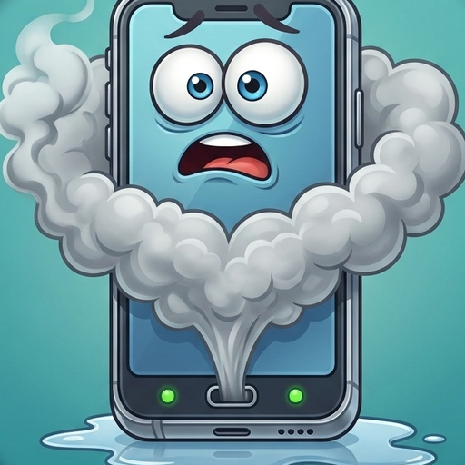
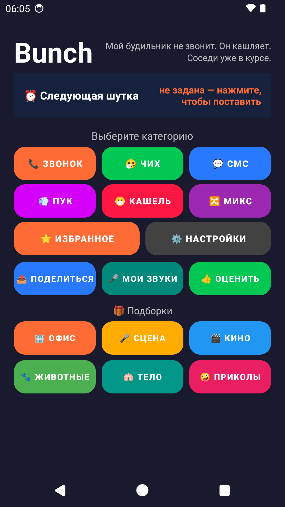
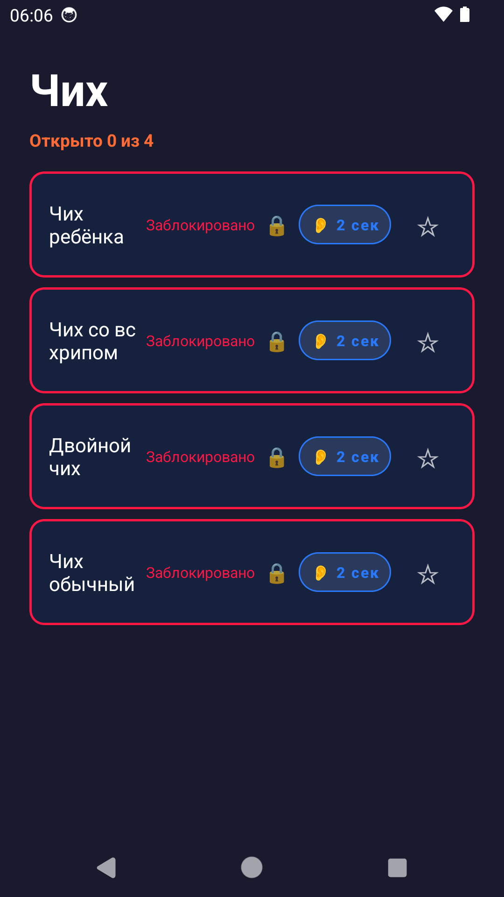
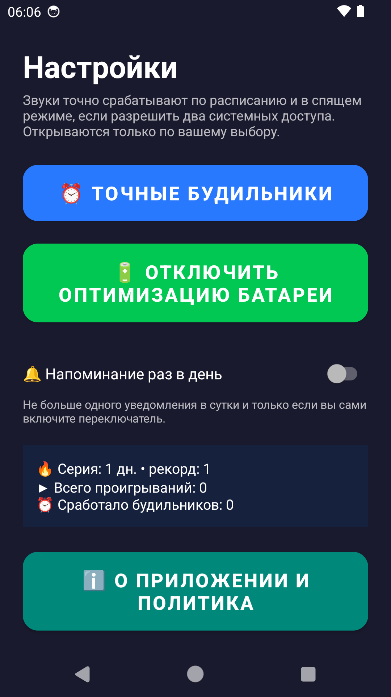

74 смешных звука для розыгрышей: чихи, кашли, пуки, отрыжка, иканье
Версия 5.10 · 74 звука · Android 7.0+ · 14.5 МБ · без регистрации · работает без интернета
или скачайте APK напрямую: ⬇ Bunch_v5.10.apk (14.5 МБ, Android 7.0+)
Чих, кашель, пук, отрыжка, иканье, зевок, храп. Девять подборок: Офис, Сцена, Кино, Животные, Тело, Приколы. Два звука в каждой категории — бесплатно навсегда.
Поставьте звук на время — он зазвучит как будильник: утром, когда коллеги ещё спят, или вечером, когда все ждут звонка от начальника. Время и отмена запуска — на главном экране.
Запишите свой звук с микрофона и используйте как будильник или отправьте другу. Записи остаются только на вашем устройстве.
Виджет «случайный звук» — тап, и звук играет. Виджет серии дней показывает, сколько дней подряд вы открываете приложение.
Микс из пяти случайных звуков, встряхивание телефона, избранное со звёздочками и отправка конкретного звука в мессенджер.
Счётчик дней подряд растёт, пока вы открываете приложение. Напоминание приходит не чаще раза в сутки и только если вы его включили.



Отсканируйте QR-код
или откройте страницу в браузере:
takomak2012-cyber.github.io/bunch
Актуальная версия: 5.6 (versionCode 46) · 74 звука · размер 14.5 МБ
Релиз v5.4 и список прошлых версий
SHA-256: 8dd82dbd880b2f91e6de6a87967918a0c4479a43da2f32ec156d61fcdd786c7e
Прямая ссылка на APK: ⬇ Bunch_v5.10.apk (14.5 МБ, Android 7.0+)
https://github.com/takomak2012-cyber/bunch/releases/download/v5.10/Bunch_v5.10.apk"section">
Да, само приложение бесплатное. Дополнительные звуки открываются за просмотр рекламы или просто за несколько дней использования.
Нет. Ни аккаунта, ни подписки, ни отправки данных.
Да, все звуки встроены в приложение. Интернет нужен только для показа рекламы.
Да. Откройте «Мои звуки», нажмите «Записать» — запись станет будильником или файлом для отправки.
Для этого в настройках приложения есть доступ к точным будильникам и отключению оптимизации батареи. Включите их — звук сработает вовремя, даже когда телефон заряжается.
Никаких: нет своей аналитики, нет идентификаторов, геолокации и переписок. Рекламные сети обрабатывают технические данные только для показа рекламы.
Mixkit (mixkit.co) — лицензия Mixkit: использование в коммерческих проектах разрешено, указание авторства не требуется. Звуки человека: чихи, кашли, пуки, иканье, зевки, храп, дыхание, смех.
Wikimedia Commons — Public Domain, CC0, CC BY и CC BY-SA. Эти лицензии требуют указания авторства, поэтому список источников приведён ниже и продублирован в приложении (Настройки → О приложении).
Сигналы уведомлений (СМС) сгенерированы для этого приложения и принадлежат его разработчику.
Полный перечень файлов с указанием источника и лицензии — в репозитории проекта: MIXKIT_MANIFEST.csv и COMMONS_MANIFEST.csv.